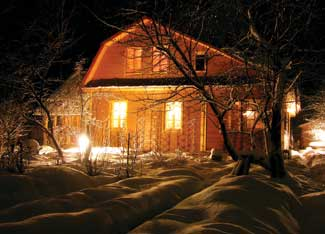
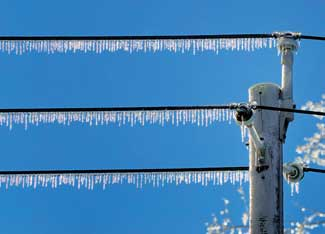

If it’s frigid outside and the electrical grid goes down, you need backup heating right away. Central heating systems fueled with oil or gas need electricity to function, and when they quit, houses can become unlivable in a matter of hours.
All over the country, the transmission lines, transformers and switches that make up the electrical grid are old and overloaded, according to Daniel Scotto, a Wall Street financial analyst specializing in electric utilities. Experts say we can expect more frequent power failures because the aging infrastructure isn’t being upgraded, especially now that the worldwide meltdown of the banking system is making investment financing scarce.
The best way to protect your family is to do some planning now. If you live in a cold climate, the first priority is either a backup electrical generator and/or a heating system that can run without electricity. The generator option is usually sufficient for short emergencies of a day or two, but in extended and widespread outages, gasoline and diesel fuel become precious and rare commodities. In warmer climates, a generator is a necessity because refrigeration is the most pressing need.
A woodstove is a good non-electric heating and cooking option, provided you keep enough firewood on hand to fuel it during an emergency. Most natural gas or propane stoves and fireplaces can operate without electricity because they have either a continuous pilot flame or electronic ignition with battery backup. Before buying a gas appliance, make sure it has one of these features. A propane heater will go through a lot of fuel when running continuously, so if propane is your backup fuel, consider keeping an emergency supply on hand - during extended ice storms or blizzards, delivery trucks often can’t get through blocked roads.
Pellet stoves need electricity to run the fuel feed auger and fans, and outdoor boilers depend on it to operate pumps that move the water to the house and back. As with conventional heating systems, a backup generator is needed to make either option functional.
Whatever your choice, make safety your highest priority. Fatalities during winter power failures are mostly due to breathing carbon monoxide gas released by temporary electrical, cooking and heating equipment. Natural gas and propane cooking ranges shouldn’t be used as space heaters because of this. Kerosene heaters can be dangerous in confined spaces, so they are not a good emergency option. Charcoal grills or gas generators should never be used in an enclosed space such as a garage, or even a breezeway - and especially not in the house.
When planning your strategy, consider four key needs: heating, cooking, refrigeration and water pumping. A trusty woodstove might be the best way to handle the first two, and a generator would be needed for the rest. Your rural household may already have both, but make sure they’re ready to go just in case the unthinkable happens.
|
 FOTOLIA Winter can be a dangerous time to be without power, but you can keep your home and family warm with a little planning. |
 BRONWYNPHOTO/FOTOLIA Winter storms can wreck havoc with the electric grid, particularly with aging infrastructure. |
|